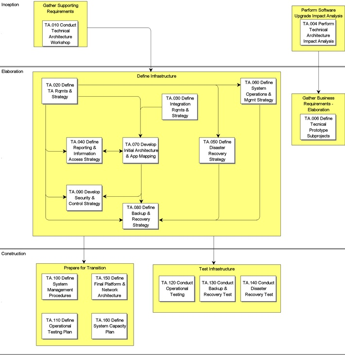

OUM |
Process Overview |
||
Method Navigation |
Current Page Navigation |
||
|
|
||||||||
The goal of the Technical Architecture process is to design an information systems architecture to support and realize the business vision. The process takes the business and information systems requirements and develops a blueprint for deploying and configuring:
The tasks in the Technical Architecture process identify and document the requirements related to the establishment and maintenance of the application and technical infrastructure environment for the project. Processes and procedures required to implement, monitor and maintain the various environments are established and tested.
The Technical Architecture process specifies elements of the technical infrastructure of the development project. It assumes that the business already has an information system strategy and that these elements fit within that strategy. There must be a sharp focus on the technical infrastructure in a OUM-based solution deployment project. By exposing its business systems to the Web, a business is exposing itself to unpredictable load levels and, sometimes, a hostile security environment. Therefore, the importance of the technical infrastructure cannot be overstated.
It is highly advisable to perform a benchmarking exercise as early as possible to make sure the capacity, workload, failover, and security requirements of the system are fulfilled. Leaving this until later in the development significantly increases the risk level of the development. The process focuses on specifying the elements of the infrastructure during Elaboration, and on iteratively refining and constructing those elements during Construction.
The Technical Architecture process is a critical project element, particularly for systems that have complex requirements. Examples of complex requirements include systems that will be deployed as public facing on the Internet, systems with high transaction volumes, systems with aggressive performance targets, systems with high availability requirements, or systems servicing user communities that are distributed geographically over large distances or a variety of time zones. If the project is implementing using software or technology that is not commonly in use or has been very recently released, the level of complexity is also more significant due to increased potential of encountering issues during the Implementation process.
The requirements that drive Technical Architecture also impact Performance Management (PT) and the two processes are closely related.
 This process overview is written from the perspective of a Full Method View, utilizing ALL of the activities and tasks in this process. Therefore, all of the following sections provide comprehensive information. If your project is utilizing a tailored approach (for example, Technology Full Lifecycle View, Application Implementation View, Middleware Architecture View), not everything in this overview may be appropriate for your project. Please keep this in mind, especially when reviewing the Key Work Products and Tasks and Work Products sections. You should use OUM as a guideline for performing all types of information technology projects, but keep in mind that every project is different and that you need to adjust project activities according to each situation. Do not hesitate to add, remove, or rearrange tasks, but be sure to reflect these changes in your estimates and risk management planning. You should also consider the depth to which you address and complete each task based on the characteristics of your particular project or project increment. See Oracle's Full Lifecycle Method for Deploying Oracle-Based Business Solutions for further information on the scalability and adaptability of OUM.
This process overview is written from the perspective of a Full Method View, utilizing ALL of the activities and tasks in this process. Therefore, all of the following sections provide comprehensive information. If your project is utilizing a tailored approach (for example, Technology Full Lifecycle View, Application Implementation View, Middleware Architecture View), not everything in this overview may be appropriate for your project. Please keep this in mind, especially when reviewing the Key Work Products and Tasks and Work Products sections. You should use OUM as a guideline for performing all types of information technology projects, but keep in mind that every project is different and that you need to adjust project activities according to each situation. Do not hesitate to add, remove, or rearrange tasks, but be sure to reflect these changes in your estimates and risk management planning. You should also consider the depth to which you address and complete each task based on the characteristics of your particular project or project increment. See Oracle's Full Lifecycle Method for Deploying Oracle-Based Business Solutions for further information on the scalability and adaptability of OUM.
This process flow for this process follows:

Depending on your project (e.g., large, complex, etc.), the project manager may designate a Technical Architecture team leader and/or team leaders for various other reasons that the project manager deems necessary. If the project manager designates team leaders, they are responsible for leading their team and reviewing the work products produced by their team. The team leader plans, directs, and monitors the day-to-day work of the team. The team leader assigns work packages to the team members and makes sure they understand the requirements. The team leader is responsible for building team cohesion, motivating the teams, and providing assistance and encouragement to the team members. Each team leader performs the final quality control and quality assurance for the team by reviewing all work products. The team leader also signs off on team work completion and quality. Work that is not up to quality standards is returned. Team leaders review work products from other teams when these work products may impact aspects of the system. The team leader reports the team's progress to the project manager. Refer to Project Management in OUM for additional information on team leaders.
The approach to the Technical Architecture may vary depending on the scale and scope of the project. If the Technical Architecture is part of a small, localized implementation of packaged software or an upgrade or enhancement to an existing application already in place, the technical and application architecture required to support the project may already be in place, or reference architectures may exist that simplify the work involved.
On the opposite end of the spectrum, a large, complex implementation project may need a semi-autonomous architecture subproject to provide effective focus and control.
In some cases, even though the application implementation is relatively small and references architectures are available, a significant portion of the architecture components may be unfamiliar to the customer. An example would the first implementation of an application using RAC or GRID within the enterprise or the first implementation of a Linux based system in an environment that was previously entirely mainframe. A technical architecture paradigm shift implies a significant change in existing process and procedure, and requires additional Technical Architecture effort.
There are two broad categories of architecture projects that differ greatly in scope. An enterprise level architecture will encompass all, or a major portion of, the important corporate information systems. This type of project may define the strategic direction for information systems and encompass multiple data centers, sites, or countries in a series of phases and often includes a technology stack upgrade or strategic change of hardware or software. An enterprise-level architecture typically must accommodate both new applications and existing legacy applications. This type of project covers the breadth of the enterprise and helps to set strategic IS Direction, but it may not get into detailed design of every component of every application or system.
A site-level architecture project is narrower in scope than the enterprise-level architecture, but it may go into greater detail for the architecture components within scope. It deals with a single installation of key applications, or a localized set of system. While architectural tasks are still required, typically they implement following standards and strategies already been defined at the enterprise level.
A coherent and well designed information systems architecture is critical for the success of any implementation project. Typical issues to be considered include:
A project that involves a replacement of a significant portion of legacy systems requires an architecture comprehensive enough to define the framework for the information systems vision and strategy of the the corporation.
Technical Architecture covers two major areas: Application Architecture, the deployment and configuration of applications across servers, hardware platforms and data centers, and Technical Architecture, the deployment, configuration and management of the hardware platform and network infrastructure.
The Application Architecture portion of the process includes these key areas:
Application Deployment and Integration - Defining the applications deployment across different data centers and servers, together with the supporting databases is an important activity. The information flows between the deployed applications reveal the application integration points and interfaces that may be needed.
Information Security and Control - Information security and control is an increasingly critical topic that is often underestimated, particularly when deploying packaged applications. Flawed assumptions may exist, such as the idea that all necessary security is "built in", or that an application that is not publicly facing on the Internet does not have to be concerned about information security and controls. The security landscape is heavily influenced by government legislation, particularly in the areas of privacy and compliance, and the standard application features can only address a subset of the overall information security requirements.
Reporting and Information Access - Reporting and information access addresses the different types of reporting and information needs for the business, such as the operational reporting strategy, decision support strategy , ad hoc reporting, business intelligence, and analytical reporting. The strategy needs to take into account the physical data distribution in the business and the databases and applications within which the data is stored.
Application Architecture - Application architecture addresses the specific database and infrastructure configurations required to support the applications business requirements. Application requirements may have a direct effect on your application and technical architecture, influencing such items as application deployment, and database configurations such as data partitioning or language support.
The Technical Architecture portion of the process includes the following key areas:
Server Configuration - This area covers the design of the optimal configuration of the company wide network of database and application servers. This also includes the review and definition of scaling and fault tolerance.
Processing Configurations - This area covers the various N-tier configurations for the separation of presentation, business logic, and data management processing within your applications. You have direct control over this for in-house developed applications, but packaged applications may require that you make choices regarding how you partition your processing.
Physical Database Design and Use of Database Features - This area includes the detailed layout of a database across file systems and disks and the use of the advanced database features such as multi-threaded server
Platforms and Networks - Platforms and networks constitute the technical infrastructure of the new system and must have the capacity to meet the technical requirements, performance requirements, transaction and user volumes anticipated at cutover and for some predetermined future period of time.
System Availability Strategy - This is the strategy defined to address the different types of planned and unplanned outages. Many different detailed techniques and tools exist to provide the system availability the business requires and to guard against the loss of critical data, but there are tradeoffs to consider when selecting the mechanisms and systems to adopt.
Systems Management Procedures and Tools - There are a wide variety of software tools that allow for monitoring and managing of the software, server hardware, and network aspects of the architecture. This strategy considers the selection of the appropriate tools from both Oracle and third party vendors and establishes the processes and procedures necessary to use the tools effectively.
Integration Architecture Requirements - Integration architecture defines the subsystems used to pass data between applications while maintaining the integrity of data and supporting delivery. Significant advances in technology have increased the capability of integration subsystems and many customers can benefit from the introduction of more advanced techniques in conjunction with the replacement of their legacy systems.
Most projects delegate at least some portion of the Technical Architecture work to customer staff or third parties. A common example is network architecture and administration. Depending on how scope of responsibilities have been divided, it is possible that a significant portion of the Technical Architecture task may be the responsibility of the customer or be assigned to a third party to perform. Regardless of who has the responsibility, the substantive work described in the TA series of core tasks must still be performed in order to establish a sound technical foundation for the implementation.
In projects that delegate the bulk of responsibility for technical architecture to the customer, a Technical Architecture Workshop is the mechanism used to ensure the customer is aware of the expectations and requirements associated with Technical Architecture in the Oracle Unified Method as well as to share best practice approaches and experiences of other customers with them. The Workshop should familiarize the customer with the basic concepts, activities and tasks that make up the Technical Architecture process, the reference architectures most appropriate to the specific project implementation requirements, the processes and procedures required to effective manage and maintain the technical infrastructure, and the establishment of metrics and monitoring related to technical architecture and Service level Agreements (SLA). The Workshop also provides a mechanism to gather information on existing architecture standards or requirements that can be used to develop the Technical Architecture Requirements and Strategy document (TA.020 ).
The tasks and work products for this process are as follows:
| ID | Task | Work Product |
|---|---|---|
Inception Phase |
||
TA.004 |
Perform Technical Architecture Impact Analysis | Technical Architecture Impact Analysis |
TA.010 |
Conduct Technical Architecture Workshop | Technical Architecture Workshop Results |
Elaboration Phase |
||
TA.006 |
Define Technical Prototype Subprojects | Technical Prototype Approach |
TA.020 |
Define Technical Architecture Requirements and Strategy | Technical Architecture Requirements and Strategy |
TA.030 |
Define Integration Requirements and Strategy | Integration Architecture Strategy |
TA.040 |
Define Reporting and Information Access Strategy | Reporting and Information Access Strategy |
TA.050 |
Define Disaster Recovery Strategy | Disaster Recovery Strategy |
TA.060 |
Define System Operations and Management Strategy | System Operations and Management Strategy |
TA.070 |
Define Initial Architecture and Application Mapping | Initial Architecture and Application Mapping |
TA.080 |
Define Backup and Recovery Strategy | Backup and Recovery Strategy |
TA.090 |
Develop Security and Control Strategy | Security and Control Strategy |
Construction Phase |
||
TA.100 |
Define System Management Procedures | System Management Guide |
TA.110 |
Define Operational Testing Plan | Operational Testing Plan |
TA.120 |
Conduct Operational Testing | Operational Test Results |
TA.130 |
Conduct Backup and Recovery Test | Backup and Recovery Test Results |
TA.140 |
Conduct Disaster Recovery Test | Disaster Recovery Test Results |
TA.150 |
Define Final Platform and Network Architecture | Final Platform and Network Architecture |
TA.160 |
Define System Capacity Plan | System Capacity Plan |
The objectives of the Technical Architecture process are:
Refer to Key Work Products for a complete list of key work products in OUM.
The following roles are required to perform the tasks within this process:
| Role ID | Name | Responsibility |
|---|---|---|
Implementing Organization |
||
| APS | Application/Product Specialist | Provide knowledge and guidance regarding the functionality and capabilities of the product(s) being implemented. |
| BA | Business Analyst | Participate in the Technical Architecture Workshop. Provide business requirements that could impact technical architecture. Review Architecture Requirements and Strategy in terms of satisfaction of business requirements. Assist in the process of requirement analysis and review them. |
| DBA | Database Administrator | Perform the activities of the operational test scenario, and gather and report results. Perform the activities of the backup and recovery test scenario, and gather and report results. Perform the activities of the disaster recovery test scenario, and gather and report results. Provide information relating to database processing and disk requirements. |
| DV | Developer | Participate in the Technical Architecture Workshop. Participate in the process of requirement analysis. |
| NE | Network Engineer | Provide the network requirements for the Architecture Requirements and Strategy. |
| SAN | System Analyst | Participate in the Technical Architecture Workshop. Document Technical Architecture Requirements. Analyze the business requirements. Identify and document the Reporting and Information Access Strategy. Provide and assist in analyzing requirement related specifically to the business requirements and applications. Assist the system architect in providing information about the non-functional business requirements. Provide information regarding the structure of the new system. Provide information regarding the capacity planning scenarios. |
| SA | System Architect | Lead the Technical Architecture Workshop. Familiarize the customer with the goals and objectives of the workshop, assist in gathering technical architecture requirements. Obtain customer participation, set initial interview schedule, and get input from key users. Analyze, define and document Architecture Requirements and Strategy. Responsible for obtaining input on customer infrastructure, existing standards, policies and procedures. Review the Architecture Requirements and Strategy. Assist with gaining customer approval. Identify and document the Integration Architecture Strategy. Prepare the functional Integration requirements. Obtain and document the special considerations and technical assumptions. Review the Integration Architecture Strategy. Analyze the operational requirements. Produce the Disaster Recovery Strategy. Determine the operational requirements. Produce the System Operations and Management Strategy work product. Review the System Operations and Management Strategy and perform any negotiation required. Review architecture requirements and strategy and validate conceptual architecture. Develop the initial technical architecture. Conduct design review sessions and prepare the Initial Architecture and Application Mapping. Investigate the organization's backup strategy. Prepare the Backup and Recovery Strategy. Interview technical personnel to find the currently implemented security and control strategy. Interview the users to identify any special requirements. Interview the development team to ascertain more detail on the structure of the application. Prepare the Security and Control Strategy. Identify and document the system management procedures. Ensure that all relevant areas have been addressed within the operational scenario to be tested. Ensure that all necessary resources are available for operational testing. Ensure that all relevant areas have been addressed within the backup and recovery scenario to be tested. Ensure that all necessary resources are available for Backup and Recovery testing. Ensure that all relevant areas have been addressed within the disaster recovery scenario to be tested. Ensure that all necessary resources are available for disaster recovery testing. Review prior architectural work and identify any technical requirement updates required. Prepare the Final Platform and Network Architecture. Review previous capacity planning, architecture and volume documents. Work with hardware vendor to perform or validate capacity planning strategy. Prepare System Capacity Plan. |
Customer (User) |
||
| KEY | Ambassador User | Participate in the Technical Architecture Workshop. Provide business expectations and requirements that may influence the Technical Architecture. Provide the business requirements related to Disaster Recovery. Review and approve the Disaster Recovery Strategy. |
| CDA | Customer Data Administrator | Participate in the Technical Architecture Workshop. Identify existing procedures, standards, SLAs. Participate in the process of requirement analysis. |
| CPM | Customer Project Manager | Coordinate the interview schedule for the workshop, assists in gathering technical requirements. Participate in the Technical Architecture Workshop. Facilitate review by customer IS staff. Approve Architecture Requirements and Strategy. |
| CPS | Customer Project Sponsor | Review and approve the Disaster Recovery Strategy. |
| AU | Internal Auditor | Provide information about internal audit requirements. |
| ISM | IS Manager | Review the Final Platform and Network Architecture and provide comments and approval. |
| OS | IS Operations Staff | Participate in the Technical Architecture Workshop. Identify existing process, procedures, standards, SLAs. Participate in the process of requirement analysis. Provide information on existing standards, processes and procedures related to Disaster Recovery. Review and approve the Disaster Recovery Strategy. Provide and review the System Operations and Management Strategy. Indicate any aspects of the System Operations and Management Strategy, which are unacceptable. Negotiate acceptable service levels. Answer queries and provide information regarding the current user backup and recovery strategy. Review test results for completeness and success against measurable success criteria. Review test results for completeness and success against measurable success criteria. Review test results for completeness and success against measurable success criteria. Provide information regarding the current and future software and hardware and review options for the new system. |
| SS | IS Support Staff | Participate in the Technical Architecture Workshop. Participate in the process of requirement analysis. Provide existing guidelines, standards and technical architecture configuration. Review the Architecture Requirements and Strategy and provide feedback. Provide information on the current integration strategy, special considerations and technical assumptions, existing systems and current enterprise standards. Provide information on existing standards, processes and procedures related to Disaster Recovery. Review and approve the Disaster Recovery Strategy. Answer queries and provide information regarding the current and proposed options for the new system. Answer queries and provide information regarding operational requirements. Answer queries and provide information regarding the current security and control strategy. Provide information on existing processes and tools, standards, policies and procedures. Review and approve the procedure document and checklists. Review test results for completeness and success against measurable success criteria. Review test results for completeness and success against measurable success criteria. Review test results for completeness and success against measurable success criteria. Provide information regarding the current and future software and hardware and review options for the new system. |
| NA | Network Administrator | Provide information relating to network configuration and capacity. |
The critical success factors of this process are:
Balanced input of business and technical requirements driving the architecture is an especially important success factor. The Technical Architecture process should not be considered to be a purely "technical exercise". This approach can may result in the business requirements becoming subservient to the technology. The Technical Architecture process should use the business requirements and functional mappings as the drivers for the optimal configuration of the applications being implemented, for the selection of hardware and network infrastructure supporting the application processing and for the tools, processes and procedures needed to manage the complete system.

Copyright © 2006, 2016, Oracle and/or its affiliates. All rights reserved.